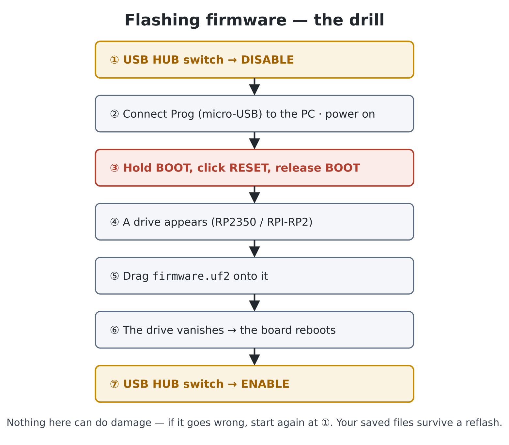

In this chapter you will put the firmware onto the board, wire everything up, and prove the machine is alive by making it speak, beep and blink. By the end you will be sitting at a working Python computer.
On a Colour Maximite 2 there is nothing to flash: MicroPython is an app on its SD card, started from the MMBasic prompt with
RUN "micropython.app". Appendix K says how; then pick up again at step 4.
beep() in step 4 will be a silent
experience.While the box is open, find three things on the board you will need in a moment (they are all visible in chapter 1’s photograph): the micro-USB socket labelled “Prog”, the small slide switch labelled “USB HUB” (positions ENABLE / DISABLE), and the two push-buttons labelled BOOT and RESET.
The firmware is a single file called firmware.uf2.
Download the latest release to your PC from:
https://github.com/UKTailwind/micropython/releases/latest
If your board came with the firmware pre-installed, skip straight to Step 3 — Wire up and switch on; you can always come back here when an update is released.
The RP2350 chip has a built-in “accept new firmware” mode in which it pretends to be a USB memory stick. Getting into it involves the Prog port, the USB HUB switch and the two push-buttons:
RP2350 or
RPI-RP2), just as if you had plugged in a memory
stick.firmware.uf2 onto that drive.That’s it. Nothing to install on the PC, and you cannot get it wrong in any damaging way — if anything goes amiss, start again at step 1. The same procedure installs every future firmware update, and updating the firmware does not erase the programs you have saved on the board.

One thing that surprises PC users: in normal operation the Pico Computer 3 will not show up as a drive on a PC. With the switch at ENABLE, the chip’s USB connection belongs to your keyboard and mouse — the board is the computer now, not an accessory. The Prog port exists purely for firmware.
Coming from MMBasic: the same BOOT-and-RESET, drag-a-UF2 drill as flashing a PicoMite — plus this board’s USB HUB switch, which must be at DISABLE to flash and back at ENABLE afterwards.
Within a couple of seconds the monitor lights up and shows the banner:
MicroPython on PICO COMPUTER 3 with RP2350B
>>>You will also see a line like USB keyboard -> slot 1
confirming the keyboard was found. The >>> is the
prompt — the machine’s way of saying “your turn”.
Type each line below at the prompt and press Enter after it. (Typing, remember, not pasting — get your fingers used to the machine.)
Ask it to speak:
>>> print("I am alive!")
I am alive!Ask it a question — the prompt is a calculator whenever you need one:
>>> 6 * 7
42Make a noise:
>>> beep()And blink the status LED on and off:
>>> led = Pin("LED", Pin.OUT)
>>> led.on()
>>> led.off()Four lines in, you have used the four things every program is made of: output, calculation, sound and control of hardware. Everything from here to the Asteroids game in chapter 24 is these ingredients, arranged with more care.
Don’t worry about why these lines look the way they do — that is what the next chapters are for. Do notice what happens if you mistype one:
>>> beeep()
Traceback (most recent call last):
File "<stdin>", line 1, in <module>
NameError: name 'beeep' isn't definedNothing bad. The machine tells you it didn’t understand, names the word it choked on, and gives you a fresh prompt. Error messages are the machine helping, not scolding — chapter 3 teaches you to read them.
The machine assumes a US keyboard layout. If
" and @ come out swapped, or # is
missing, set your layout:
>>> keymap("UK")Available layouts are US, UK, DE, FR, ES and BE
(keymaps() lists them). The setting is remembered across
power-offs, so this is a one-time job.
This is your first meeting with a pleasant habit of the machine: settings worth keeping (keyboard layout, screen mode) are saved automatically and restored at every boot.
Coming from MMBasic:
keymap("UK")isOPTION KEYBOARD UK. The saved-settings idea matches MMBasic’sOPTIONsystem generally.
| Symptom | Likely cause and fix |
|---|---|
| Monitor shows nothing at power-on | Is the power switch actually on? (It’s push-on/push-off, so a second press turns the board off.) Then check the HDMI cable is seated and the monitor input source is right. Monitors take a couple of seconds to lock onto a new signal — be patient before re-plugging. |
| Monitor says “no signal” or “mode not supported” | A previously saved screen mode may not suit this monitor. Connect
via the USB-C console (see below) and type
screen(hdmi.RGB640). |
| Keyboard does nothing | First check the USB HUB switch is at
ENABLE — at DISABLE the keyboard sockets are
dead. Then look for the USB keyboard -> slot 1 message
at boot. Wireless keyboards with their own dongle usually work;
Bluetooth-only ones do not. |
Wrong characters when typing (" vs @) |
Set your layout: keymap("UK") — step 5. |
| The board never appears as a drive when flashing | The USB HUB switch must be at DISABLE; hold BOOT while clicking RESET; and use a micro-USB data cable — some charging cables have no data wires. |
| A program is stuck and the prompt won’t come back | Press Ctrl-C. This interrupts whatever is running
and returns you to >>>. Failing that, click
RESET — the machine boots fresh in seconds and your
saved files are untouched. |
led.on() works but no light appears |
Check the small 3-pin jumper labelled HEARTBEAT
sits on its CYW43 side — that is where
Pin("LED") drives LED1 on a standard (Wi-Fi-equipped)
board. |
| Settings are in a mess and you want a fresh start | rm("/settings.json") then power-cycle: US keyboard,
640×480 defaults are restored. Your own files are not affected. |
The USB-C port — a lifeline worth knowing about.
Alongside the screen and keyboard, the machine carries a second copy of
the console on its USB-C port — the same one that
supplies its power. Connect it to a PC instead of the charger, open a
terminal program (PuTTY or TeraTerm on Windows, screen on
Linux/Mac) at 115200 baud, and the same
>>> prompt appears there — whatever state the
screen is in. You will not need it in normal use, and nothing in this
book requires it — but if the display is ever unusable (say, a saved
video mode your monitor rejects), one command typed over USB-C fixes it.
It is also how files are sent from a PC without an SD card (chapter 5).
Details are in the User Manual, section 1.
beep(1000) and
beep(200). Which number do you suppose is the pitch?
(Guessing and testing is a legitimate research method — you will use it
constantly.)led.on() and
led.off(). Tedious, isn’t it? In chapter 8 you will teach
the machine to do the repeating for you.led variable did not
(led.on() now gives a NameError). Flash
remembers; workspace forgets — that distinction from chapter 1, seen
live.help(). It mentions things this book hasn’t —
skim it now, recognise it later.